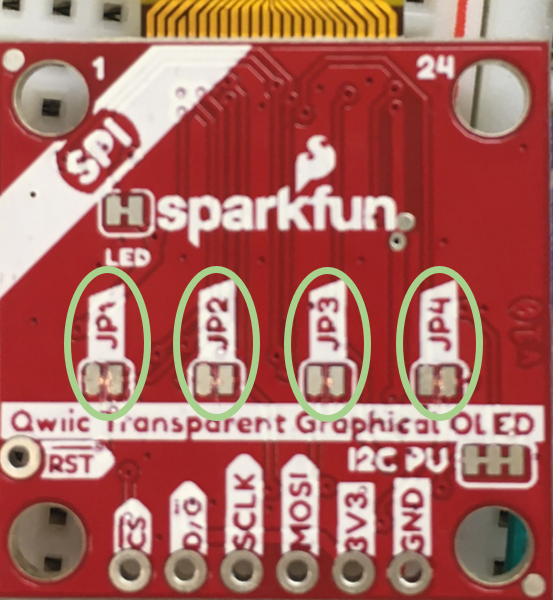

Progress Report for Kennedy Monaco
Week 3:
Date: 11 September 2020Total hours: 7
Description of design efforts:
 Figure 1: SparkFun TOLED Graphical Breakout Display [1] |
My main focus this week was researching different Transparent OLED displays to use in our project and determining which component specifications were the most important to consider when choosing our display. After comparing three different displays, I decided on the SparkFun Transparent Graphical OLED Breakout display. This display supports I2C and SPI interfaces. I performed preliminary research to review each protocol and determine the pros and cons of using one or the other. |
I2C and SPI are serial communication protocols commonly used to transfer data between a microcontroller and peripheral devices. Both utilize the Master-Slave relationship scheme for their functionality.
 Figure 2: SPI Master-Slave Diagram [2] |
SPI uses 4 basic signals for communication: SCLK, MOSI, MISO, and SS. SCLK is the Serial Clock that allows the master and slave to communicate synchronously and is defined by the Master. MOSI (Master Out Slave In) is the pin through which the Master sends data to the Slave. MISO (Master In Slave Out) is the pin through which the Slave sends data back to the Master. Finally, SS (Slave Select) lets the slave know that the Master is trying to communicate with it. Having multiple Slave Selects allows multiple Slaves to be connected to one Master. The SS signal attached to the desired slave is pulled low to indicate which slave the Master wishes to communicate with. Data can be sent serially to and from the slave until the transmission is complete. |
I2C uses 2 basic signals for communication: SCL and SDA. SCL is the Serial Clock that allows the master and slave to communicate synchronously and is defined by the Master. SDA is the Serial Data signal that can send information to and from the Master and Slave. Unlike SPI which sends data in a continuous stream of bits, I2C sends data bits through packets. The packet includes a Start bit, an Address Frame to indicate which Slave is in use, a Read/Write bit, an ACK/NACK bit, one or more data frames (which include 8 bits of data followed by an ACK/NACK bit), and a Stop bit to signal the end of the packet.

Figure 3: I2C Packet Structure [3]
Between the two protocols, SPI is preferred because it is able to transfer data faster than I2C so that the display can more quickly relay user metric information and toggle between screens as needed. The microcontrollers we are currently considering have 3 SPI peripherals which accommodates the OLED Display, LoRa Radio Transceiver, and IMU Receiver - the three components that require SPI in our design. In the event that a different component requires the use of SPI, the OLED can be converted to using I2C in exchange for increased display update time.
Sources Cited:
[1] SparkFun.com. 2020. SparkFun Electronics. [online] Available at: <https://www.sparkfun.com/products/15173> [Accessed 8 September 2020].
[2] SparkFun.com. 2020. SparkFun Electronics. [online] Available at: <https://learn.sparkfun.com/tutorials/serial-peripheral-interface-spi/all> [Accessed 10 September 2020].
[3] CircuitBasics.com. 2020. Circuit Basics. [online] Available at: <https://www.circuitbasics.com/basics-of-the-i2c-communication-protocol/#:~:text=I2C%20is%20a%20serial%20communication,the%20master%20and%20the%20slave.> [Accessed 10 September 2020].
References:
CircuitBasics.com. 2020. Circuit Basics. [online] Available at: <https://www.circuitbasics.com/basics-of-the-spi-communication-protocol> [Accessed 10 September 2020].
CircuitBasics.com. 2020. Circuit Basics. [online] Available at: <https://www.circuitbasics.com/basics-of-the-i2c-communication-protocol/> [Accessed 10 September 2020].
Articles.Saleae.com. 2020. Saleae Articles. [online] Available at: <https://articles.saleae.com/logic-analyzers/spi-vs-i2c-protocol-differences-and-things-to-consider> [Accessed 10 September 2020].
Week 4:
Date: 18 September 2020Total hours: 12
Description of design efforts:
  Figure 4: Cost-Analysis Component Tables | Once our team selected our primary components, I began a Cost-Analysis report to minimize cost
when selecting component suppliers. For each component, I created a table listing reliable
vendors with their respective cost multiplied by desired quantity of the in-stock component and
their shipping cost to Purdue University. Each table includes a quantity cell which, when
changed, will alter cost values automatically. Finally, I calculated two totals: Cheapest Individual Options and Mouser-Digikey Priority. As the name suggests, the Cheapest Individual Options total was found by summing the least expensive supplier option from each component table. If a supplier happened to supply the cheapest option for multiple components, the shipping cost was only included once. The Mouser-Digikey Priority total uses Mouser and Digikey suppliers when possible to reduce shipping cost. These two suppliers had multiple of the desired components available and were the only reliable suppliers for certain components.  Figure 5: Cost-Analysis Totals The Mouser-Digikey Priority total was less expensive due to the savings earned from reduced shipping costs. The images displayed show portions of the cost analysis document; however, as this is a living document these numbers may not be up-to-date. The most recent version of this document can be found on our Reference Page. |
| Additionally, I reviewed various functionalities of the STM32 Microcontroller by practicing blinking an on-board LED using timers and the on-board user pushbutton. I consulted the STM32F0xx Reference Manual [1] to determine which timer could be linked to the on-board LED and to reference multiple STM32F0 register structures such as GPIOx_MODER, RCC_AHBENR, and TIMx_CR1. Since it has been a couple of years since I have programmed a microcontroller, I also referenced an Embedded Systems textbook which includes programming syntax examples and concept theory for ARM Cortex-M Microcontrollers [2]. The final result can be found on our Media Page. |
|


Figure 7: STMicroelectronics System Workbench IDE

Figure 8: STMicroelectronics STM32CubeMX IDE
Next Week Plan:
- Ensure Order of Primary Components
- Practice Programming STM32L4 Microcontroller
Sources Cited:
[1] ST.com. 2020. STMicroelectronics. [online] Available at: <https://www.st.com/resource/en/reference_manual/dm00031936-stm32f0x1stm32f0x2stm32f0x8-advanced-armbased-32bit-mcus-stmicroelectronics.pdf> [Accessed 16 September 2020].
[2] Y. Zhu, Embedded systems with ARM Cortex-M microcontrollers in assembly language and C Third Edition. E-Man Press LLC, 2018.
Week 5:
Date: 24 September 2020Total hours: 10
Description of design efforts:
|
First, I created a list of components from our Bill of Materials to be ordered immediately. These are components our team is certain will be required for initial development, namely: LoRa Transceivers, GPS Receiver Development Boards, TOLED Displays, and IMU Development Boards. The microcontrollers will be ordered soon as well; however, each team member has their own chosen method for initial development. I will be continuing my development using the STM32L476G-DISCOVERY board. |

I spent the majority of this week working with the STM32L4 to display information on the on-chip LCD screen and interface with an Adafruit MPU-6050 6-DoF IMU. My goal was to request and receive acceleration and gyro information from the MPU-6050 and display a portion of this data on the LCD display. During this process, I became more familiar with the STM32CubeMX IDE mentioned in last week's progress report. I used this application to create the initialization functions necessary for the System Clock, GPIO, and I2C functionality.
|
|


| The majority of the example code supplied for the MPU-6050 was Arduino based and used very high-level
functions which did not give a good sense as to how the application was actually interfacing with the
sensor. In order to work with the IMU, I referenced an online tutorial as well as the Embedded Systems
textbook cited in last week's progress report [1] [2]. The code for interfacing with the LCD screen was
created by referencing an example using the HAL library from the STM32CubeL4 expansion software. The end
result is documented on our Media Page.
|
|


Next Week Plan:
- Interface with Transparent OLED Display using the STM32L4 Microcontroller
- Complete the Software Formalization Assignment
Sources Cited:
[1] ControllersTech.com. 2020. ControllersTech. [online] Available at: <https://controllerstech.com/how-to-interface-mpu6050-gy-521-with-stm32/> [Accessed 22 September 2020].
[2] Y. Zhu, Embedded systems with ARM Cortex-M microcontrollers in assembly language and C Third Edition. E-Man Press LLC, 2018.
Week 6:
Date: 2 October 2020Total hours: 8
Description of design efforts:
The Sparkfun Transparent OLED Display arrived early last weekend, so I began investigating further into the graphics library provided by Sparkfun and the breakout board schematic. As with the MPU-6050, the resources associated with the Sparkfun TOLED Display use the Arduino environment, including the HyperDisplay library made specifically for Sparkfun display products. The HyperDisplay library, however, utilizes the SSD1309 library which supports "display driver IC's without customization for any particular display hardware" [1]. So although the HyperDisplay library is incompatible with System Workbench, I have begun experimenting with using the SSD1309 library in conjunction with the HAL library provided by STMicroelectronics to interface with the OLED display.
| As discussed previously, I will be using the SPI interface to communicate with the OLED display. This particular display can accommodate both I2C and SPI protocols with I2C as default. In order to use SPI with the display, 4 jumper connections must be severed on the breakout board. JP1 is connected to the No-Connection (I2C)/Slave Select (SPI) line on the board. The default configuration pulls the Slave Select low. For SPI, the Slave Select signal should only be pulled low when the slave is required by the master. Therefore, this jumper must be severed and the respective GPIO output pin pulled high. In I2C mode, JP2 allows the user to change the I2C address from 0x30 (default) to 0x31, but severing this connection also releases the Data-Command pin for use in SPI mode. JP3 is the jumper that designates whether the display is in I2C mode (closed) or SPI mode (opened). Finally, JP4 determines if the SDA (I2C)/MOSI (SPI) pin should be bi-directional. For SPI, Master Out Slave In is a one directional signal, so the jumper should once again be severed. My display breakout board with severed jumper connections is shown on the right. |  |
I used STM32CubeMX to generate the initialization code for the GPIO, SPI, and System Clock registers, downloaded and integrated the SSD1309 library, and wrote a test "Hello World" program to display on the OLED. SPI is not compatible with the Qwiic connectors available on the board, so I used male headers to try and connect the development board to my test bread board. Unfortunately, the connection between the breakout board through holes and the header pins is too loose to provide a solid connection, so I cannot currently test for successful communication with the OLED display.
Figure 15: TOLED Test Set-up
Next Week Plan:
- Continue working with the Transparent OLED Display to establish communication
- Finalize the Software Formalization Assignment
Sources Cited:
[1] GitHub.com. 2020. GitHub, Inc. [online] Available at: <https://github.com/sparkfun/SparkFun_HyperDisplay> [Accessed 30 September 2020].